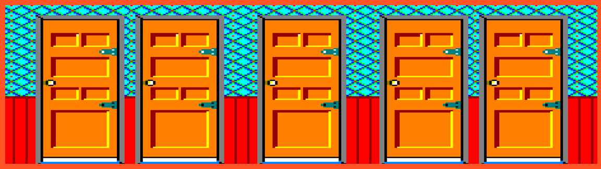
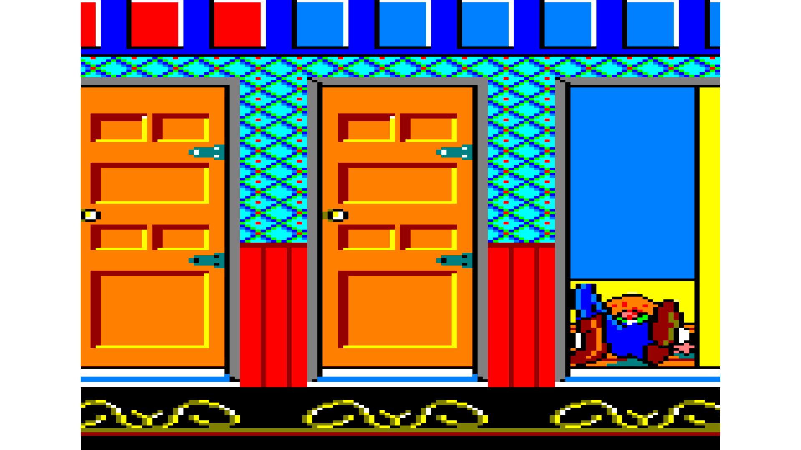
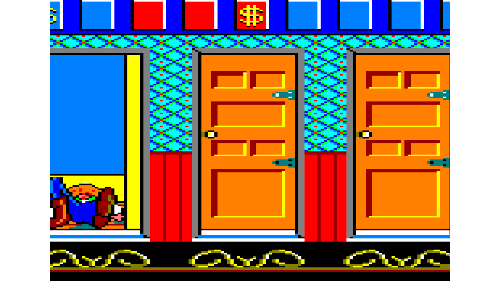
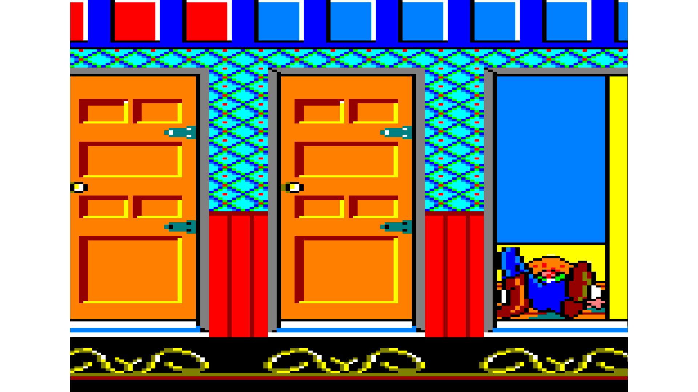
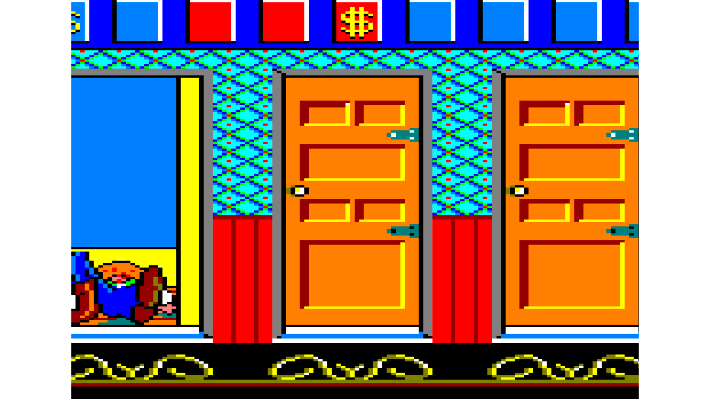

West Bank (clon)
Finalmente, encontramos la tercer y última práctica sobre PS4. Al igual que las anteriores, está programada en C++ y de nuevo también multiplataforma (PS4, PC).
Para esta vamos un paso más allá y creamos una copia del juego Banck Panic, por lo que además del renderizado de las prácticas anteriores así como la lógica, tenemos que añadir input del mando PS4.
Debido a que estas prácticas están desarrolladas sobre un kit de desarrollo de PS4, y por consiguiente cuentan con un contrato de confidencialidad detrás, no es posible dar mucha más información acerca de estos proyectos de PS4.
Imágenes del juego

 



¿Cómo instalarlo?
Como anteriormente se ha mencionado, debido al acuerdo de confidencialidad con SONY estos proyectos de PS4 no están disponibles para descargar.